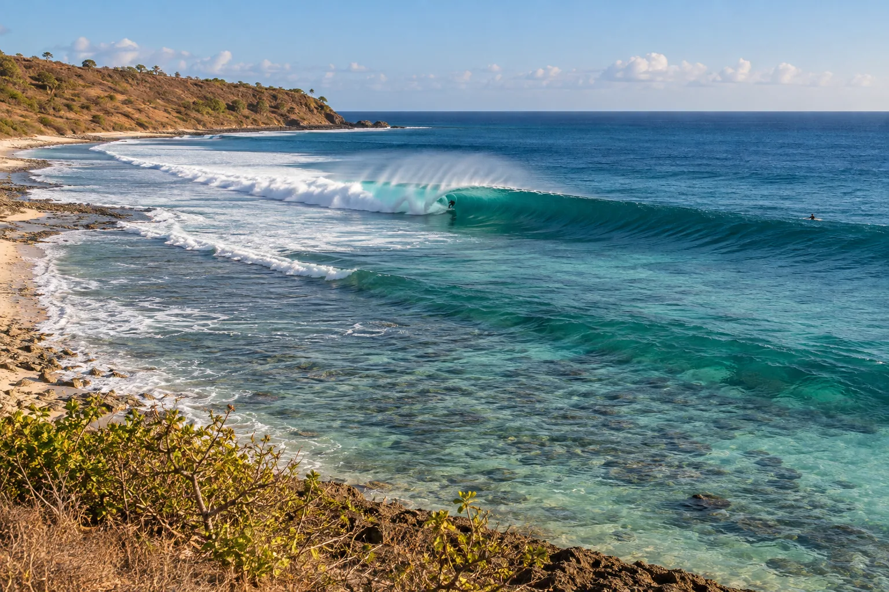

Desert Point
Lombok, Indonésie · surf

Gauche tubulaire interminable sur récif très peu profond, l’une des meilleures vagues du monde.
- Lieu
- Lombok, Indonésie
- Niveau
- Expert
- Activités
- surf
- Type d'eau
- Mer / océan
- Coordonnées
- -8.75, 115.83 (position approximative du secteur)
Dangers à connaître
- Récif à fleur d’eau.
- Secours éloignés.
Le conseil d'Ocean Buddy
Réservé aux experts : le récif est à fleur d’eau et le tube se referme vite.
Ouvrir dans Ocean Buddy Télécharger sur l'App Store
Source : Fiche Ocean Buddy · septembre 2026 · à vérifier localement.